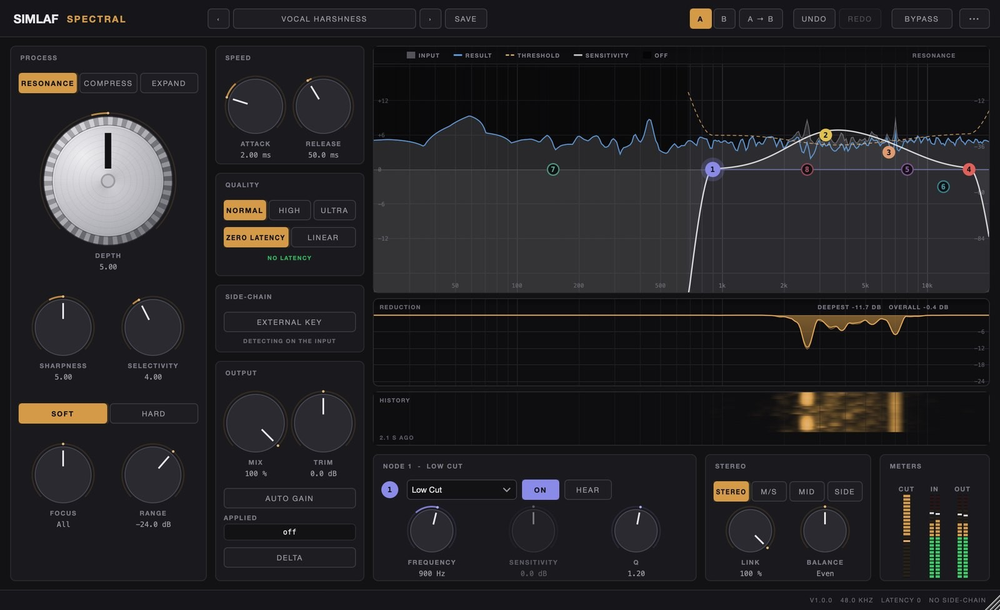

SIMLAF Academy / Lesson 01
Lesson 01 · Vocals
Taming harsh vocals without losing the air
Harshness and sibilance live in different places and need different tools. Where to look, what to reach for, and the order that keeps the top open.
A bright vocal can be beautiful. A harsh one makes the listener reach for the volume. The usual fix, a wide cut around 3 kHz and a gentle low-pass on top, takes the edge off and takes the life out with it: the words lose their presence and the top end goes grey.
There is a better way. Harshness is rarely the whole top end. It is a handful of narrow peaks that stick out on certain notes, plus the consonants that spit. Remove those, and you can keep everything that makes a vocal sound expensive.
Where harshness lives
| Region | What you hear | Usual cause |
|---|---|---|
| 2–5 kHz | Hard, glassy, pokes out on loud notes | Resonances in the voice, mic and room |
| 5–10 kHz | S, T, sh and ch sounds that spit | Sibilance: bursts of noise in consonants |
| Above 10 kHz | Breath, openness, air | Usually the part you want to keep |
Our hearing is most sensitive between about 2 and 5 kHz (the ear canal itself resonates near 3 kHz), so a few extra decibels there read as aggression long before they read as brightness. Some of that energy is fixed: a mic or room resonance that sits on every note. Most of it moves. It follows the melody and the vowels, jumping out on the belted line in the hook and disappearing in the verse.
Sibilance is a different animal. It is noise rather than tone, and it arrives in short bursts on consonants. On deeper voices it usually centres around 5–6 kHz; on brighter voices, nearer 7–8 kHz.
Find it before you fix it
- Set a sensible level. Loud enough to hear detail, quiet enough to talk over: about 75–80 dB SPL if you have a meter. Loud monitoring exaggerates 2–5 kHz and tires your ears within minutes.
- Loop the worst part. Usually the loudest line of the hook.
- Sweep, then remove. Boost a narrow band by about 8 dB with a Q around 6 and sweep slowly from 2 to 6 kHz. Note where the vocal jumps out and hurts. Then take the boost away before you decide anything.
- Ask one question. Is the problem there on every note, or only on some notes and words? The answer chooses the tool.
Four tools, four jobs
Static EQ: for what is always there
If a resonance sits on every note, a plain cut is honest and cheap. Keep it narrow (Q 4–8) and shallow (−2 to −4 dB). If you find yourself going past −5 dB, the problem probably moves, and a static cut will dull the notes that never had it.
Dynamic EQ: for one frequency that comes and goes
When the harshness lives at one frequency but only on loud notes, make that band dynamic, so it cuts only when the band crosses its threshold. Start with Q 2–4, attack 1–5 ms and release 40–100 ms, then set the threshold so the band moves 2–6 dB on the loudest phrases and not at all on the quiet ones. In SIMLAF EQ, any of the 20 bands can be dynamic, acting above or below its threshold, with its Dynamic Range setting how far it may move.
Resonance suppression: for peaks that move
When the harsh frequency follows the melody, chasing it with EQ bands is a losing game. A resonance suppressor watches the whole spectrum and turns down only the peaks that stick out from their neighbours, moment by moment, then lets go.
In SIMLAF Spectral, start from the stock preset Vocal Harshness. Its sensitivity curve leans on about 3.2 kHz and 6.5 kHz and fades out below 900 Hz, so the body of the voice is left alone. Then:
- Depth: raise it until the hard edge goes, and stop before the vocal starts to sound dull.
- Speed: attack 1–5 ms and release 40–80 ms suit most vocals. The preset starts at 2 ms and 50 ms.
- Delta: switch it on to hear only what is being taken away. It should sound like thin, whistly edges. If you can follow the lyrics in the Delta signal, you are removing the voice, not the harshness: back off.
Spectral runs at zero latency by default, so the same settings can sit on the vocal while it is being recorded.
De-esser: for sibilance only
A de-esser listens for S energy and turns it down only while it is there. Split-band mode reduces just the sibilant band and keeps the body of the voice underneath the S. Wide-band mode turns the whole vocal down for each S, which sounds more natural on some voices and more obvious on others.
In SIMLAF De-Esser, the Male Vocal and Female Vocal presets start at 5.5 kHz and 7.5 kHz. Set Listen to Band to hear where the S lives, then to Removed to check what is being taken. Aim for 3–6 dB of reduction on the loudest S. An S should still sound like an S: push too far and the singer acquires a lisp.
The order that keeps the air
- 01Clean-up EQHigh-pass and static cuts
- 02Resonance controlThe moving 2–5 kHz peaks
- 03CompressorLevel and density
- 04Air shelf+1.5 to +3 dB above 10 kHz
- 05De-esserCatches the S the shelf brought up
- Resonance control before compression. A compressor reacts to harsh peaks too. Take them out first and the compressor works on the performance, not on a 3 kHz spike.
- De-esser after compression. Compression brings quiet consonants up relative to the vowels, so sibilance grows after it.
- Air before the de-esser. A high shelf lifts the S along with the breath. With the de-esser after it, you keep the air and lose the spit.
There is a neat alternative to the last two stages: make the air shelf itself dynamic. In SIMLAF EQ, set a high shelf at 10–12 kHz with 2–3 dB of boost, switch the band to Dynamic in Above mode, and give it a Dynamic Range of about −3 dB. Then set its threshold so that only the S sounds cross it; breaths are loud up there too, so loop a breathy line and check. The vowels and breaths get the lift; each S pulls the shelf back down.
Judge at matched loudness
Every cut makes the vocal a little quieter, and quieter always sounds a little worse. Compare at the same loudness or you will talk yourself out of good work. SIMLAF Spectral and SIMLAF EQ both have Auto Gain for exactly this. Then:
- Toggle bypass on the looped section a few times without looking at the screen.
- Check at a low level. If the harshness is gone when quiet but comes back when loud, add a little more depth.
- Listen in the mix, not in solo. A vocal that sounds slightly bright on its own often sits perfectly against the beat.
- Take a ten-minute break, then listen again. Tired ears hear harshness everywhere, or nowhere.

The recipe
- High-pass around 70–100 Hz; static cuts of −2 to −4 dB for resonances that never move.
- SIMLAF Spectral, Vocal Harshness, Depth until the edge goes; confirm with Delta.
- Compressor for 3–6 dB of gain reduction on the loud phrases.
- Air shelf of +1.5 to +3 dB above 10 kHz, static or dynamic.
- De-esser, split-band, 5–8 kHz, 3–6 dB on the loudest S.
- A/B at matched loudness, then a low-level check.
SIMLAF Audio · SIMLAF Academy · Lesson 01